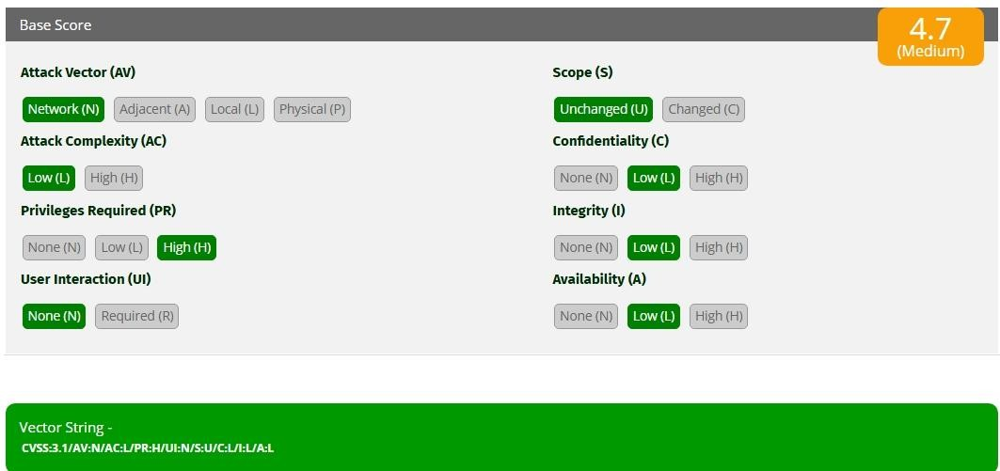

Actividad 17
Evaluación de Vulnerabilidades con CVSS v3.1
| Institución | Universidad Politécnica de San Luis Potosí (UPSLP) |
|---|---|

1. Construcción del Vector CVSS
| Métrica | Parámetro | Justificación |
|---|---|---|
| AV:N | Attack Vector: Network | La vulnerabilidad puede explotarse a través de la red. |
| AC:L | Attack Complexity: Low | La explotación requiere baja complejidad. |
| PR:H | Privileges Required: High | Se requieren privilegios elevados. |
| UI:N | User Interaction: None | No requiere interacción del usuario. |
| S:U | Scope: Unchanged | No cambia el alcance. |
| C:L | Confidentiality: Low | Impacto bajo en confidencialidad. |
| I:L | Integrity: Low | Impacto bajo en integridad. |
| A:L | Availability: Low | Impacto bajo en disponibilidad. |
CVSS:3.1/AV:N/AC:L/PR:H/UI:N/S:U/C:L/I:L/A:L
La vulnerabilidad continúa siendo relevante porque, aunque el atacante necesita privilegios elevados para explotarla, una vez obtenidos dichos privilegios puede comprometer información, modificar datos o afectar servicios internos del sistema. En entornos corporativos, un atacante puede obtener privilegios mediante robo de credenciales, ataques internos o escalamiento previo, por lo que la vulnerabilidad representa un riesgo real para la organización.
B) ¿Qué tipo de atacante podría explotarla?
Podría ser explotada principalmente por un atacante interno, un administrador malicioso o un ciberdelincuente que previamente haya comprometido una cuenta con privilegios elevados. También podría aprovecharla un atacante externo que haya logrado acceso administrativo mediante phishing, robo de credenciales o escalamiento de privilegios.
C) ¿Qué significa que el impacto sea bajo en las tres dimensiones?
Significa que la vulnerabilidad produce afectaciones limitadas en la confidencialidad, integridad y disponibilidad del sistema. La información comprometida sería parcial o poco sensible, las modificaciones realizadas serían reducidas y el impacto sobre la operación o disponibilidad del servicio sería mínimo, sin causar una interrupción crítica de los sistemas.
3. Cálculo de Puntuación
La calculadora CVSS v3.1 arroja la siguiente puntuación para el vector indicado:
| Categoría | Rango | Clasificación en este caso |
|---|---|---|
| Baja | 0.1 – 3.9 | |
| Media | 4.0 – 6.9 | ← Este caso (4.7) |
| Alta | 7.0 – 8.9 | |
| Crítica | 9.0 – 10.0 |
4.7 — MEDIA